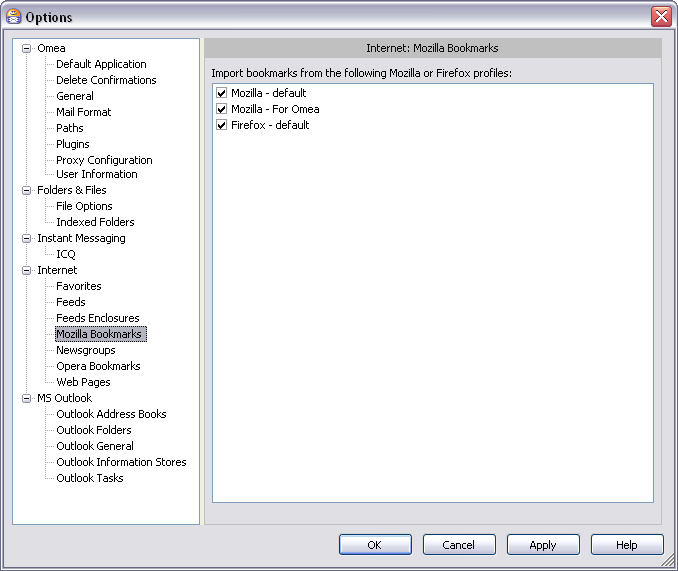
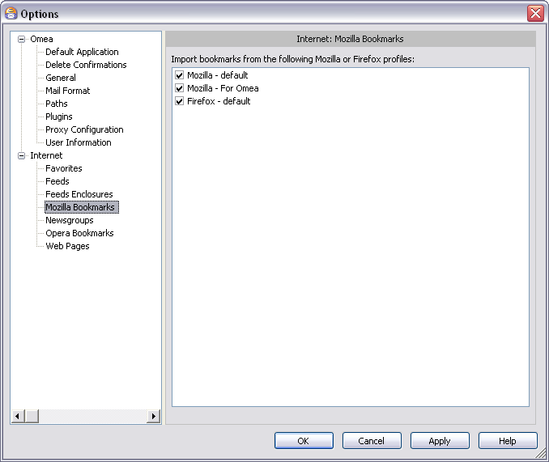

Mozilla Bookmarks
You can access this option from the Main menu: Tools | Options: Internet: Mozilla Bookmarks
Omea ReaderOmea Pro enables you to import your bookmarks list from Mozilla or Firefox web browsers. This page provides options for selecting which Mozilla profile to import.
 Mozilla Bookmarks options in the Options Dialog
Import Bookmarks from the Following Mozilla or Firefox Profiles
The list under this heading shows the Mozilla profiles that Omea Reader Omea Pro has detected on your computer. You can import bookmarks from one profile. Click a profile in the list to select it.
See also: